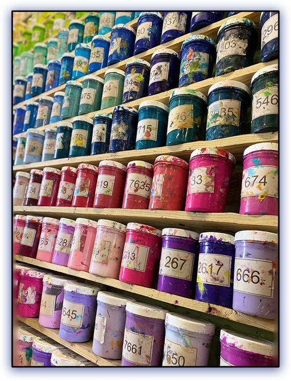
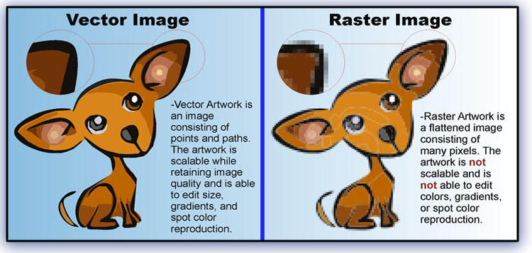
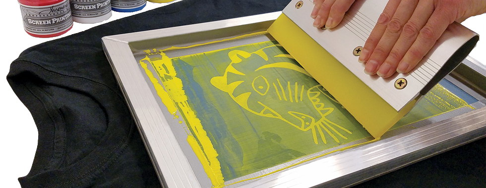

January 2024
Welcome back to our exploration of the fascinating realm of custom apparel, where every choice is a brushstroke on the canvas of self-expression. As we continue our conversation, envision this as a personalized consultation, your guide to making informed decisions in the vibrant landscape of customization.
Let's start by delving deeper into the artistry of heat transfers. Picture a meticulous process where your chosen design is crafted with precision, transformed into a vinyl or digital material, and then expertly applied to your garment using the magic of heat. The result? A visually stunning imprint that captures every detail with vibrancy.
Heat transfers shine when it comes to versatility. They can seamlessly adhere to various materials, offering a world of possibilities for customization. At our establishment, we've carved a niche in heat transfers, especially for projects involving fewer than 12 pieces. This process ensures that even the most intricate designs, with gradients and myriad colors, come to life with finesse.
However, it's crucial to acknowledge the nuances. While heat transfers excel in reproducing high-resolution images, providing clarity and detail, they may not boast the same durability as other methods. Regular washing or intense physical activity could impact their longevity.
Transitioning to the venerable technique of screen printing, envision a process where each color in your design is applied individually, creating a layered masterpiece. Screen printing is celebrated for its durability and ability to produce bold, high-contrast designs that withstand the test of time.
At Bell Custom Apparel we embrace screen printing for larger-scale projects, typically involving 12 pieces and up, with limited exceptions. Why the distinction? Screen printing proves most cost-effective and efficient for bulk orders. It involves the meticulous creation of individual screens for each color, culminating in a visually impactful design that becomes an integral part of the fabric.
Imagine the canvas where every color is carefully layered, ensuring not just visual brilliance but enduring artistry. The ink integrates into the fabric, promising longevity and vibrancy throughout the life of the garment.
Now, let's navigate the decision-making process. How do you choose between heat transfers and screen printing? The answer lies in the specifics of your project and the desired outcome.
For smaller quantities or designs with intricate detailing and numerous colors, heat transfers offer flexibility and precision. They cater to the subtleties of your vision, ensuring every detail is faithfully reproduced. Yet, bear in mind their potential wear and tear, especially under frequent use.
On the other hand, if your vision encompasses larger quantities for a team or event, screen printing takes center stage. It's not merely about cost-effectiveness; it's about creating designs that stand the test of time.
Let's bring our discussion closer to home - Ogden, Utah, and the greater Salt Lake City area. When considering embroidery or screen printing services in this dynamic region, understanding the distinctions becomes paramount.
In our local context, we not only bring technical expertise but an understanding of the community's preferences. Our commitment extends to providing advice tailored to your project's specific needs. We are more than service providers; we're your local creative partners and storytellers.
As we delve further into customization, let's broaden our perspective. The type of garment matters. From classic cotton tees to performance fabrics designed for active wear, we offer a diverse range to suit your specific needs. Our local insights guide you in selecting the perfect canvas for your designs, ensuring comfort and style align seamlessly.
Spotlighting a crucial facet - our approach to pricing. We understand that budget considerations play a significant role in your decision-making process. Our pricing structures are transparent, and we collaborate closely with you to find solutions that align with your financial parameters. Whether you're a small business in need of promotional items or a larger organization requiring bulk orders, we tailor our services to accommodate your budget.
To summarize, let's highlight the significance of local expertise. In Ogden, Utah, and the greater Salt Lake City area, we aren't just offering a service; we're your creative partners deeply invested in the local community. Our commitment is to ensure your vision comes to life with the highest standards and resonates with the local aesthetic.
In our heat transfers, we leverage the latest in digital technology, ensuring sharpness and clarity in every detail. For screen printing, envision a collaborative process where skilled artisans create a layered masterpiece. Beyond technique, we offer a personalized consultation, understanding your vision and providing insights that go beyond the technicalities.
Closing Thoughts: whether you lean towards the precision of heat transfers or the enduring artistry of screen printing, our commitment remains unswerving - to deliver a customization experience that surpasses expectations. We're not just creating apparel; we're crafting wearable art that tells your unique story.
When seeking embroidery or screen printing services in Ogden, Utah, or the greater Salt Lake City area, remember that you're not just choosing a service; you're selecting a team dedicated to transforming your ideas into wearable works of art. Embrace a world where customization transcends the ordinary, and let's make every garment a testament to your creativity. Welcome to a realm where every stitch, every print, is a celebration of individuality.
Local Insight Tip: Embrace a realm where every stitch, every print, is a celebration of individuality. Welcome to a world where your customization journey begins. We invite you to visit Bell Custom Apparel in Ogden UT, where the art of customization comes alive
#CustomApparelJourney #HeatTransfersArtistry #ScreenPrintingMastery #OgdenCustomization #LocalInsightsUtah #GarmentCrafting #WearableArtistry #BudgetFriendlyCustomization #LocalExpertise #CreativePartnership #CustomizationExperience #UniqueStoryInEveryStitch #PrecisionInDesign #EnduringArt #BeyondTheOrdinary #IndividualityCelebrated #LocalCraftsmanship #CustomizationInOgden #CreativeCommunity #MakeItYourOwn